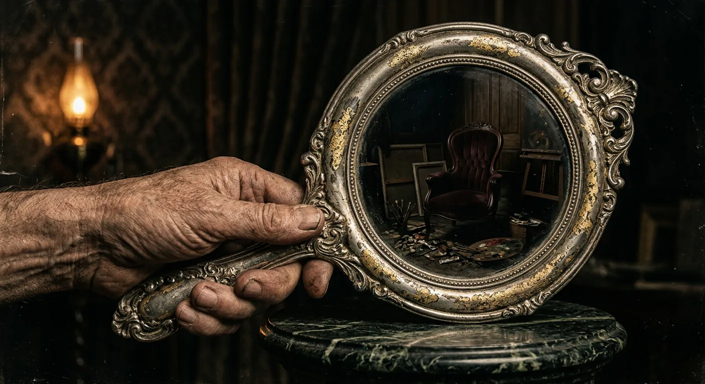
Art's Beautiful and Useless Truth
Before the curtain rises upon the story proper, the author steps forward to address his audience directly—not with the customary throat-clearing of Victorian preambles, but with a manifesto carved in marble and poison.
The artist, we are informed, exists as a creator of beautiful things, yet the supreme achievement of art lies in revelation through concealment—the work must shimmer forth while its maker retreats into shadow. As for the critic, that curious species who hovers about galleries and circulates through drawing rooms pronouncing judgments, he is merely a translator, rendering his impressions into some new dialect or medium. And here the first paradox strikes like a match: all criticism, from the most exalted to the most debased, is nothing more than autobiography in disguise.
The author proceeds to sort humanity into its essential categories with the precision of a botanist classifying orchids. Those unfortunate souls who discover ugliness lurking within beautiful things are pronounced corrupt—though not interestingly so, for they lack even the saving grace of charm. Those who perceive beauty within beauty constitute the cultivated, the elect, for whom aesthetic experience requires no moral translation. There exists hope for such refined creatures, whereas for the others there exists only vulgarity.
Then arrives the declaration that shall echo through every subsequent page: there is no such thing as a moral or immoral book. Books are simply well written or badly written. That is the whole of the matter, and the nineteenth century—that age of industrial earnestness and middle-class anxiety—is given its diagnosis. Its horror of realism springs from the spectacle of Caliban confronting his own brutish reflection; its equal horror of romanticism derives from Caliban's distress at finding himself absent from the glass entirely. Either way, the monster rages.
The artist, we learn, may take moral life as subject but answers only to the morality of craft—the perfect manipulation of imperfect instruments. The artist proves nothing, for even truths may be proved, and to traffic in proof is beneath aesthetic dignity. Ethical sympathy is dismissed as an unpardonable mannerism, morbidity an impossibility. Thought and language serve merely as tools; vice and virtue function merely as pigments upon the palette.
Art exists as surface and symbol simultaneously, and those who venture beneath either do so at considerable peril—for the spectator gazes into art and discovers not life, but himself reflected. When critics quarrel over a work, they announce only its vitality; when they agree, one suspects the work is already dead. A useful object may be forgiven provided its maker harbors no admiration for it, while a useless object justifies itself only through the intensity of its creator's devotion.
And so the preface concludes with its final, devastating epigram, crystalline and unanswerable: All art is quite useless.
With these principles established—beauty as its own justification, morality banished from the aesthetic realm, the artist absolved of all obligation save the pursuit of perfection—the stage is set for a tale that shall test every doctrine against the dangerous substance of lived experience.
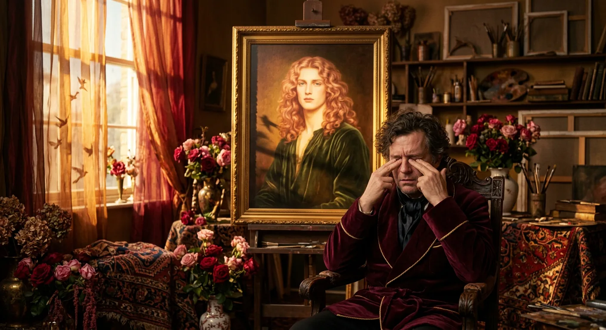
The Seduction of a Beautiful Soul
The studio lay heavy with fragrance—roses mingling with lilac and the pink-flowering thorn—while Lord Henry Wotton reclined upon a divan of Persian saddle-bags, wreathed in cigarette smoke, watching shadows of birds flit across the tussore-silk curtains like some transient Japanese painting. Outside, bees droned through unmown grass, and the distant murmur of London hummed beneath it all like an organ's bourdon note. At the room's centre stood a portrait of extraordinary beauty: a young man rendered in full length upon the canvas, before which the artist Basil Hallward sat transfixed, his pleasure giving way to something like fear as he pressed his fingers to his closed eyes, as though to imprison a dream he dared not lose.
Lord Henry pronounced it Basil's finest work, yet the painter refused to exhibit it—not at the Academy, not at the Grosvenor, not anywhere. He had put too much of himself into the thing, he confessed, though Harry dismissed such sentiment as vanity. The subject bore no resemblance to Basil whatsoever; this ivory-and-rose-leaf Adonis, this Narcissus in oils, possessed a beauty that transcended intellect, which Lord Henry declared the enemy of harmony in any face. The painter's reluctance only deepened Harry's curiosity, and at last the name escaped: Dorian Gray.
The revelation prompted Basil to speak of secrecy as the sole remaining romance in modern life, while Harry countered with sardonic observations on marriage as institutionalized deception. They wandered into the garden, settling beneath a laurel bush where sunlight polished the leaves and daisies trembled in the grass, and there Lord Henry pressed his friend for the truth behind his reticence.
What Basil confessed was nothing less than artistic obsession made manifest. He had encountered Dorian Gray two months prior at Lady Brandon's crush, and the moment their eyes met, terror seized him—the recognition that this personality might absorb his entire nature, his very soul, his art itself. Despite attempting flight, fate intervened in the form of their hostess, who introduced them with characteristic absurdity. From that evening forward, Dorian became indispensable: not merely model or sitter, but muse, catalyst, the living embodiment of a new artistic epoch. In Dorian's presence, Basil had discovered what the invention of oil-painting meant to the Venetians, what the face of Antinous meant to Greek sculpture—a harmony of soul and body that his generation had lost.
Yet this very idolatry was precisely what the portrait betrayed. The canvas revealed the secret of Basil's soul, and he would not bare that heart to the shallow scrutiny of the world. Harry dismissed such scruples as the excess of painters; poets, after all, published their passions profitably. But Basil remained steadfast: the world should never see his portrait of Dorian Gray.
Their discourse turned to the nature of the attachment itself—Basil admitted that Dorian sometimes treated his devotion carelessly, like an ornament for a summer's day—before Harry recalled where he had heard the name: from his aunt, Lady Agatha, who had described a serious young philanthropist destined for East End charity work. Basil's alarm at this connection proved well-founded, for scarcely had he begged Harry not to spoil or influence his friend when the butler appeared with an announcement that would change everything: Mr. Dorian Gray had arrived and was waiting in the studio.
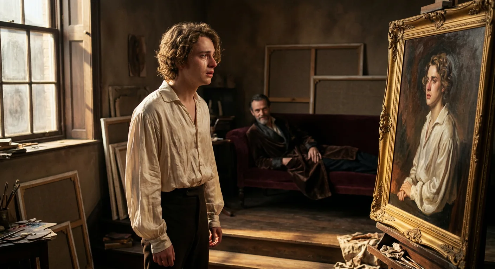
Lord Henry's Dangerous Philosophy Unveiled
The fateful meeting unfolds in Basil Hallward's studio, where Dorian Gray sits at the piano, leafing through Schumann's "Forest Scenes" with the careless grace of youth, unaware that the afternoon will transform him utterly. Lord Henry Wotton enters, and from the first exchange of pleasantries—the witty deflection about Lady Agatha's charitable concerts, the languid charm of his manner—something quickens in the atmosphere, some current of dangerous possibility.
Basil attempts, with increasing futility, to dismiss his friend, sensing perhaps what influence this serpent-tongued aesthete might exert upon his beautiful sitter. But Dorian, willful and petulant as only the very young and very lovely can afford to be, insists Lord Henry remain. And so the painter returns to his canvas while Lord Henry, reclining upon the divan with deliberate indolence, begins his seduction—not of the body, but of the soul.
His philosophy spills forth in honeyed paradoxes: all influence is immoral, for it robs a man of his authentic self; the aim of life is self-development, the realization of one's nature; we are punished not for our sins but for our refusals; the only way to rid oneself of temptation is to yield to it. Dorian stands motionless upon the platform, lips parted, eyes strangely bright, as these ideas penetrate him like arrows finding their mark. Words, he realizes—mere words!—possess a terrible power to give form to formless things, to awaken what has slumbered unacknowledged in the depths of one's being.
In the garden, among the lilac blossoms whose perfume Dorian drinks in feverishly, Lord Henry presses his advantage with an impassioned sermon on youth and beauty. Time is jealous, he warns; the gods give quickly and take away quicker still. Youth alone is worth having, and it passes like the shadow of a dream. A new Hedonism—this is what the century requires, and Dorian might be its visible symbol.
When the portrait is completed—Hallward's masterpiece, rendered in that bold touch which speaks of strength—Dorian confronts his own image and feels the revelation of his beauty strike him like a blade. But the recognition brings anguish rather than joy, for he perceives now what Lord Henry has taught him to perceive: that this painted perfection will endure while his living face must wither and decay. The thought is unendurable. "If it were only the other way," he cries, tears welling in his eyes. "If it were I who was to be always young, and the picture that was to grow old! For that—for that—I would give everything! I would give my soul for that!"
The words hang in the air—a wish, a curse, a covenant whose terms remain as yet unknown. Basil, horrified, blames Harry; Harry, amused, disclaims responsibility. The afternoon dissolves into tea and plans for the theatre, Lord Henry claiming Dorian for the evening while the painter remains behind with his canvas, murmuring sadly that he shall stay with "the real Dorian."
As the door closes upon the departing pair, Basil flings himself upon the sofa, pain etched across his features—for he understands, perhaps better than anyone, that something precious has been corrupted, that the innocent boy who entered his studio that morning has already begun to disappear, replaced by something Lord Henry has awakened and shaped in his own image.
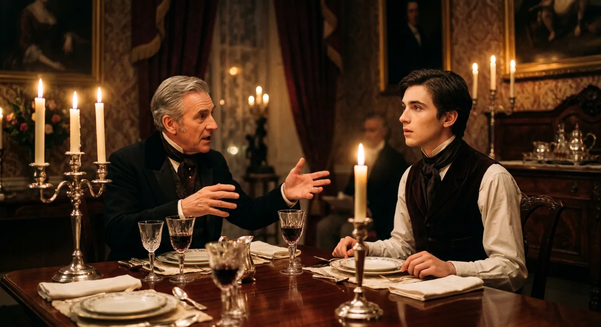
A Lineage of Beauty and Tragedy
At half-past twelve the following day, Lord Henry Wotton made his way to the Albany to call upon his uncle, Lord Fermor—that most English of specimens, a genial bachelor whom the world deemed selfish simply because it could extract nothing from him, yet whom Society judged generous for the singular virtue of feeding those who entertained him. The old gentleman had perfected what Lord Henry might have called the great aristocratic art of doing absolutely nothing, maintaining two town houses he never used, dining perpetually at his club, and excusing his sole concession to industry—the management of his collieries—on the grounds that coal enabled a gentleman the decency of burning wood upon his own hearth.
Lord Henry had not come for money, that tedious necessity which only troubled those who paid their bills. He sought instead what he termed "useless information"—intelligence concerning the parentage of Mr. Dorian Gray. The name stirred something in Lord Fermor's memory, and soon the tale unspooled: Dorian was the grandson of the late Lord Kelso, his mother the extraordinarily beautiful Margaret Devereux, who had scandalized Society by eloping with a penniless young subaltern. The romance had ended in tragedy—the young husband killed in a duel at Spa, rumored to have been orchestrated by Kelso himself through a paid Belgian adventurer. Margaret had returned to her father's house, never spoke to him again, and died within the year, leaving behind the child who would become Dorian Gray.
The story stirred Lord Henry profoundly as he walked toward his Aunt Agatha's luncheon. Here was tragedy as the necessary shadow behind beauty—worlds in travail that the meanest flower might blow. He recalled how charming Dorian had been the evening before, how the boy's face had wakened with wonder in the candlelight, how speaking to him was like playing upon an exquisite violin. The exercise of influence, Lord Henry mused, was perhaps the most satisfying joy remaining in their vulgar age—to project one's soul into some gracious form, to hear one's own views returned with the added music of youth and passion. Dorian possessed grace, the white purity of boyhood, beauty such as Greek marbles preserved. What could one not fashion from such material? Lord Henry resolved to be to Dorian what the boy was unconsciously to Basil—a shaping influence, a dominant force.
At Aunt Agatha's table, Lord Henry found the usual assembly: the ample Duchess of Harley, Sir Thomas Burdon with his wardrobe of borrowed witticisms, the silent Mr. Erskine of Treadley, and Dorian himself, who flushed with pleasure at Lord Henry's entrance. The conversation turned to Dartmoor's impending marriage to an American heiress, which Lord Henry deflected with characteristic epigrams about American women and their talent for concealing their parents. When Lady Agatha lamented Lord Henry's corruption of "our nice Mr. Dorian Gray" away from charitable work in the East End, he delivered his philosophy with devastating precision: he could sympathize with everything except suffering, which was too ugly; one should sympathize instead with the colour, the beauty, the joy of life.
What followed was a performance—Lord Henry tossing paradoxes into the air, transforming them, praising folly until philosophy herself became young and danced like a Bacchante over the hills of life. Throughout it all, Dorian Gray sat transfixed, wonder growing grave in his darkening eyes, wholly under the spell.
When the luncheon dispersed, Mr. Erskine pronounced Lord Henry "extremely dangerous" and invited him to Treadley to expound his philosophy over Burgundy. But it was Dorian who claimed him, touching his arm at the door, murmuring that he must come—for no one talked so wonderfully. Lord Henry smiled; he had talked quite enough for one day. All he wanted now was to look at life, and Dorian was welcome to look at it with him.
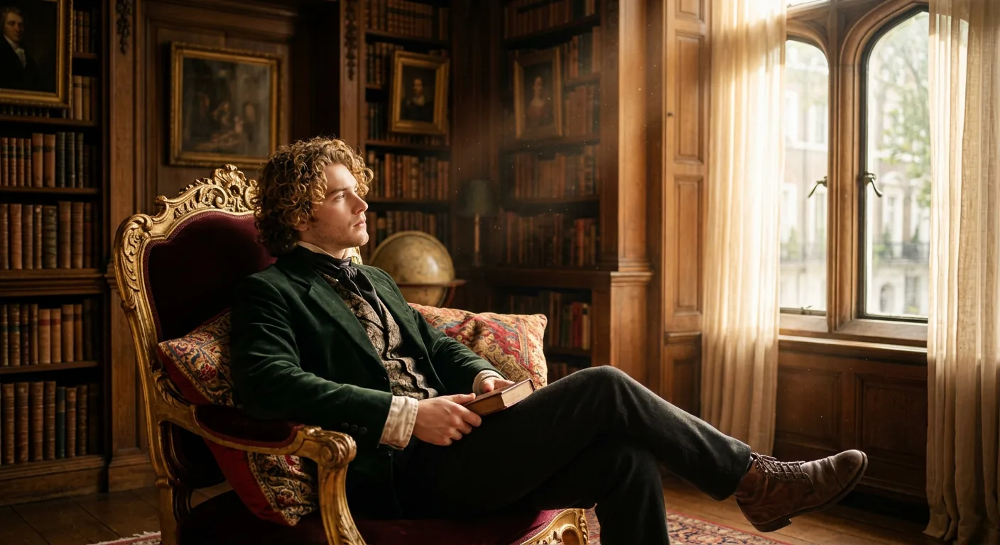
Sibyl Vane and the Theatre of Love
One languid afternoon, a month removed from their first fateful meeting, Dorian Gray found himself draped across a luxurious arm-chair in Lord Henry's Mayfair library—that exquisite little room where satinwood and Persian silk conspired with apricot London light to create an atmosphere of studied refinement. Harry, characteristically late on principle (for punctuality, he maintained, was the thief of time), had left his young friend to the monotonous tyranny of a Louis Quatorze clock and the restless turning of illustrated pages.
Into this tableau of beautiful impatience fluttered Lady Henry—Victoria, that curious creature whose dresses seemed designed in rage and donned in tempest, who collected unrequited passions and illusions with equal fervor, and who adored Wagner precisely because his music was loud enough to permit uninterrupted conversation. The exchange between her and Dorian proved brief, nervous, and rich with the particular comedy of mismatched sensibilities, until Harry's arrival sent her flitting away like a rain-bedraggled bird of paradise, trailing frangipanni in her wake.
With his wife dispatched and a cigarette lit, Lord Henry turned to the business of extracting confessions. Dorian, it emerged, had fallen desperately in love—not with some creature of society, but with an actress, a girl named Sibyl Vane whom no one had yet heard of but whom everyone would someday worship. Harry received this intelligence with characteristic paradoxes about women, marriage, and the decorative nature of the fairer sex, but Dorian persisted, unfolding the tale of his discovery: how Harry's own philosophy had sent him wandering eastward through monstrous London in search of sensation; how a tawdry theatre with its vulgar drop-scenes and grotesque Romeo had yielded up this treasure—Juliet herself, with her flowerlike face and voice that moved from mellow depth to the tremulous ecstasy of nightingales.
Night after night, Dorian confessed, he returned to watch her transform into Rosalind, Imogen, every great heroine who ever breathed upon a stage. She was not merely an individual but all romance incarnate, and he meant to free her from her theatrical bondage, to launch her properly in the West End, to make the world as mad for her as he himself had become.
Lord Henry agreed to attend a performance with Basil, though he could not resist noting how Dorian had changed—how that shy, frightened boy from the studio had blossomed into something flame-colored and urgent with desire. Left alone after Dorian's departure, Harry contemplated his young friend as one might regard an experiment in progress, a beautiful subject upon whom the curious hard logic of passion might be observed. Soul and body, sensation and consequence—how mysterious it all was, how delightful to watch.
The evening settled into scarlet and gold beyond the windows, and Harry dressed for dinner, musing on that young fiery-colored life and its uncertain trajectory. But when he returned home near midnight, a telegram waited on the hall table, bearing news that rendered all philosophical speculation suddenly concrete: Dorian Gray was engaged to marry Sibyl Vane.
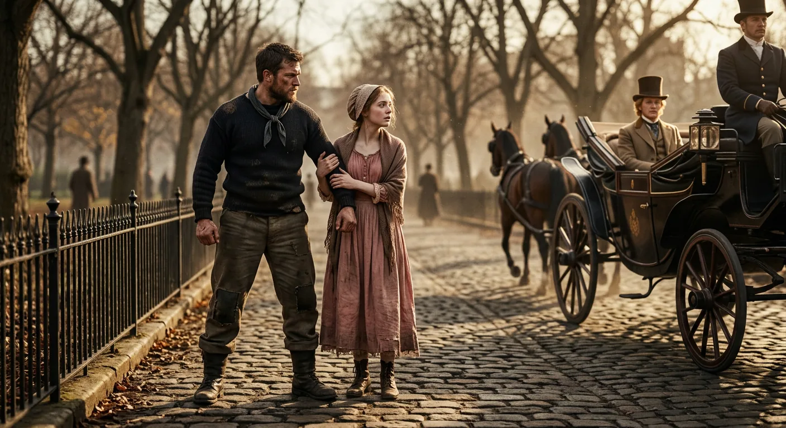
A Sister's Dangerous Prince Charming
In the cramped, dingy sitting-room where poverty has taken up permanent residence, Sibyl Vane buries her radiant face in her mother's lap and whispers of happiness—that dangerous, intoxicating happiness that only the young and newly beloved can know. Mrs. Vane, that faded theatrical relic with her bismuth-whitened hands and her mind perpetually calculating debts, can only speak of money owed to Mr. Isaacs, of fifty pounds advanced, of propriety and prudence. But Sibyl has ceased to hear such pedestrian concerns. A rose shakes in her blood; Prince Charming rules her world now, and what is money when one has discovered love?
Into this scene of maternal anxiety and daughterly rapture enters James Vane—rough, thick-set, altogether less finely bred than his sister. He is departing for Australia, that distant colony where fortunes are supposedly made, and he wishes to walk with Sibyl one final afternoon. The siblings venture into the wind-blown sunlight of the Euston Road, she graceful as a flower, he lumbering beside her like a common gardener escorting a rose. While Sibyl prattles of gold nuggets and rescued heiresses, weaving elaborate fantasies for James's colonial future, the lad broods silently over darker matters. He has heard whispers at the stage-door, caught rumors of a gentleman who visits nightly, and his instinct—that curious race-instinct he cannot name—tells him this nameless suitor means his sister no good.
Their conversation in the park turns sharp. Sibyl speaks of Prince Charming with the fervor of worship; James demands to know his name, his intentions, his very existence. When a golden-haired figure passes in an open carriage—Dorian Gray himself, glimpsed and gone—James seizes his sister's arm with fierce urgency. His vow cuts the air like a dagger: if this man ever wrongs her, he shall kill him. Sibyl can only laugh at such melodrama, dismissing her brother as a foolish boy who knows nothing of love's transformative power.
Yet the afternoon's true revelation awaits James at home, in that meagre room where flies buzz over stained cloth and his mother's droning voice devours the minutes. The question he has carried for months finally breaks free: was she married to his father? The answer—delivered with theatrical disappointment at its crude directness—confirms what he suspected. He is illegitimate, the son of a gentleman who loved but could not wed. The parallel cuts deep; another gentleman now pursues his sister, and James knows all too well what such men offer women of their station.
His parting words to his mother carry the weight of oath and prophecy: if this stranger wrongs Sibyl, James will track him down and kill him like a dog. Mrs. Vane, ever the actress, finds the threat vividly expressed, dramatically satisfying—the sort of line one might deliver to an appreciative gallery. She waves her tattered lace handkerchief as his cab departs, already rehearsing how she will tell Sibyl of her desolation.
And somewhere across London, Dorian Gray prepares to watch his beloved Juliet perform, unaware that a rough colonial-bound sailor has just sworn, with all the fierce simplicity of youth, to be his executioner should love prove false.
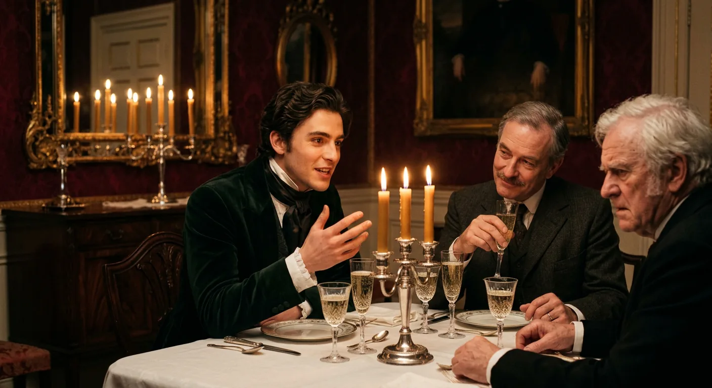
Love's Sudden and Foolish Blossoming
That evening, in a small private dining room at the Bristol, Lord Henry delivered his news with characteristic languor: Dorian Gray had become engaged to marry an actress. Basil Hallward received the announcement with undisguised alarm, his artistic sensibilities recoiling at the prospect of his beautiful subject entangled with someone so far beneath his station. But Harry, sipping vermouth and orange-bitters with the air of a man perpetually amused by the follies of others, offered no such conventional dismay. Marriage, he mused, was hardly worth either championing or condemning—it was merely another experience, and every experience possessed its particular value. If Dorian chose to worship this girl passionately for six months before inevitably turning his fascinations elsewhere, he would prove a wonderful study indeed.
When Dorian himself arrived, flushed with that particular radiance that only first love can bestow, he swept aside all reservations with the evangelical fervor of the newly converted. He spoke of Sibyl Vane as though she were not merely a woman but a living embodiment of Shakespeare's heroines—Rosalind in her moss-colored velvet, Juliet with lips the poet himself had taught to speak. He had watched her transform a dingy theatre into an enchanted forest, had kissed her behind the scenes while she trembled like a white narcissus, and had pledged himself to her with all the reckless certainty of youth. The engagement remained secret; his guardians would surely object; none of it mattered. In less than a year he would come of age, and then he could do precisely as he wished.
Throughout dinner, Lord Henry parried Dorian's romantic declarations with his customary arsenal of paradoxes. Pleasure, he insisted, was Nature's test of approval; to be good meant nothing more than to be in harmony with oneself; beautiful sins, like beautiful things, remained the privilege of the rich. Yet Dorian, intoxicated by love, dared to challenge his mentor's philosophy. When with Sibyl, he confessed, all of Harry's poisonous, delightful theories fell away. Her trust made him faithful; her belief made him good. He wanted the irrevocable vow of marriage precisely because it was irrevocable—a permanence to match the permanence of his devotion.
The philosophical sparring continued through coffee and champagne, Harry pronouncing cigarettes the perfect pleasure because they left one exquisitely unsatisfied, Dorian insisting that true pleasure lay in adoration rather than in being adored. But beneath the glittering surface of their exchange, something darker stirred. Basil Hallward sat silent and preoccupied, a gloom settling over him that no amount of witticisms could dispel. He could not bear this marriage, yet he sensed it might prove better than other fates that threatened to claim his beautiful friend.
When at last they departed for the theatre—Dorian and Harry sharing a brougham, Basil following alone in a hansom—the painter watched the flashing lights ahead of him with eyes that had grown dark with unnamed sorrow. A strange sense of loss crept over him, the melancholy conviction that Dorian Gray would never again be to him what he had once been. Life, that crude intruder, had thrust itself between them. The crowded, flaring streets blurred before his vision, and by the time the cab drew up at the theatre doors, Basil Hallward felt he had aged by years.
Inside awaited Sibyl Vane, and with her, a revelation none of them could yet anticipate.
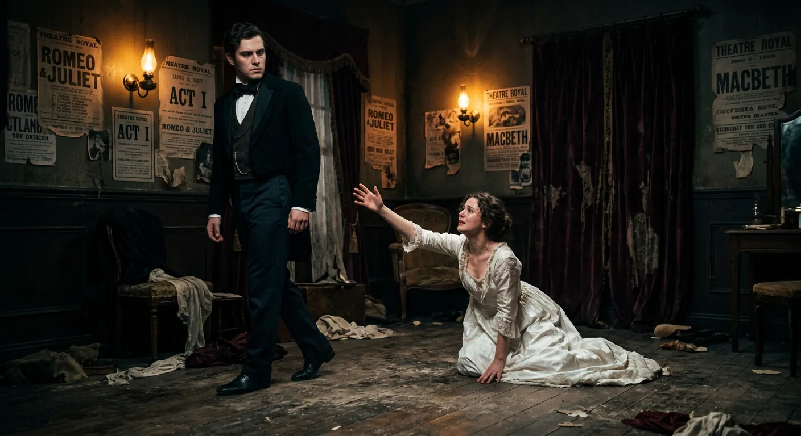
The Night Sibyl Vane's Art Died
The theatre was stifling that evening, a cramped and vulgar temple in which Dorian Gray had promised to reveal his divinity. The fat Jewish manager, all oily smiles and jewelled gesticulations, ushered the three men to their box with pompous servility—a Caliban greeting those who sought Miranda, as Dorian bitterly observed. Lord Henry, ever perverse in his amusements, declared himself charmed by the creature, while Basil Hallward contented himself with studying the coarse faces in the pit below. The gallery youths had stripped to their shirtsleeves against the oppressive heat; tawdry girls shared oranges and shrill laughter cut through the discord of popping corks.
When Sibyl Vane appeared at last, she was undeniably lovely—fawnlike in her shy grace, a faint rose-shadow of a blush upon her cheeks. Lord Henry murmured his appreciation; Basil leapt to applaud; Dorian sat motionless, entranced. Yet as the girl began to speak Juliet's verses, something proved terribly, inexplicably wrong. Her voice, though exquisite in timbre, rang false in every colour and tone. The passion was hollow, the gestures absurdly artificial. By the balcony scene, even the common audience had grown restless, whistling their displeasure. The manager raged; the play collapsed into fiasco. Lord Henry suggested departure with characteristic detachment, but Dorian remained, pale and bitter, to witness the catastrophe through to its groaning conclusion.
What awaited him in the greenroom defied all expectation. Sibyl stood radiant, triumphant, her eyes lit with exquisite fire. She had acted badly, she confessed—and she would always act badly now, for Dorian had shown her reality. Before him, the theatre had been her only truth; she had lived through Rosalind and Portia, believed the painted shadows real. But love—his love—had freed her soul from that prison of artifice. The hollowness of the stage stood revealed; she had grown sick of shadows.
Her ecstasy proved her undoing. With cold, cutting precision, Dorian pronounced his verdict: she had killed his love. He had worshipped her genius, her capacity to embody art's dreams—and she had thrown it all away for something as common as feeling. Without her art, she was nothing but a third-rate actress with a pretty face. Though she crumpled at his feet like a trampled flower, pleading and sobbing, he felt only the annoyance one suffers at emotions grown ridiculous. He left her there, crouched and weeping, and wandered through midnight streets haunted by grotesque figures until dawn found him among the lilies and roses of Covent Garden, their beauty offering faint anodyne to his pain.
Returning home as the sky hollowed into opal, Dorian paused before Basil's portrait—and started back in bewildered recognition. The mouth had changed. Where once had been perfect beauty, there now lingered an unmistakable touch of cruelty. He examined his own face in the mirror: no such line marred his lips. The mad wish he had uttered in Basil's studio returned to him—that the portrait might bear the burden of his sins while he remained untouched. Impossible, monstrous—yet there the evidence hung before him. Remorse flickered briefly through his soul; he resolved to resist temptation, to marry Sibyl, to make amends. Drawing a screen before the terrible, beautiful, altered face, he stepped into the dew-drenched garden, breathing deeply of morning air, Sibyl's name upon his lips like a prayer he almost believed.
Yet even as birdsong seemed to speak of love renewed, the portrait waited behind its screen, patient as conscience, ready to record whatever sins the coming days might bring.
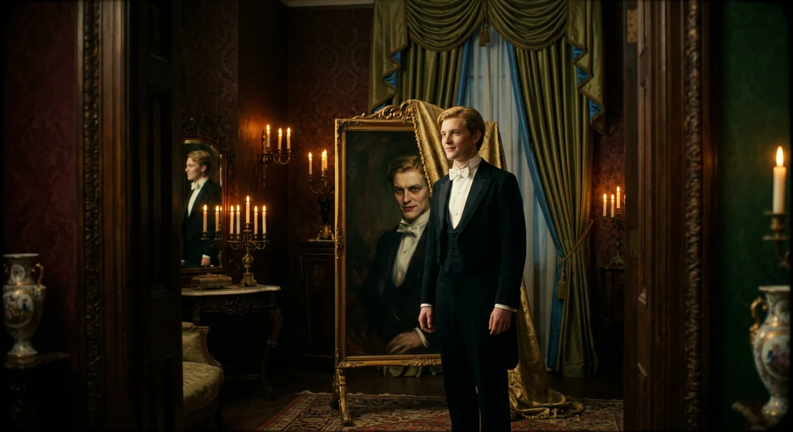
The Portrait's First Terrible Truth
Dorian Gray woke well past noon, cocooned in the luxurious trappings of his existence—olive-satin curtains with shimmering blue linings, a cup of tea upon old Sèvres china, the inevitable cascade of invitations and bills that shower upon fashionable young men during the season. The morning felt suspended in unreality; what had transpired the night before possessed the insubstantial quality of a dream half-remembered. He bathed in his onyx-paved bathroom, breakfasted lightly by an open window where warm air hung laden with spices and a bee circled sulphur-yellow roses in a blue-dragon bowl. He felt, for a suspended moment, perfectly happy.
Then his eye fell upon the screen concealing the portrait, and happiness fled.
Alone at last—having dismissed his valet with studied casualness—Dorian locked both doors and confronted what he dreaded to confirm. The portrait had indeed altered; the cruel twist about the lips remained fixed in paint, a visible testament to his treatment of Sibyl Vane. With something approaching scientific fascination, he contemplated the impossible change, wondering at the subtle affinity between canvas and soul. Yet the sight stirred conscience rather than horror alone. He resolved upon reformation: he would marry Sibyl, transform his selfish passion into something nobler. The portrait would serve as his moral compass, an ever-present symbol of sin's degradation. He wrote her a passionate letter of contrition, page after page of wild sorrow, discovering that luxury peculiar to self-reproach—for when we blame ourselves, we feel no one else retains the right.
Lord Henry's insistent knocking shattered this fragile penitence. The news he carried proved more shattering still: Sibyl Vane was dead, having swallowed poison in her dressing-room the night before. What might have been accident would be called accident, though Harry harbored no such illusions.
Dorian's grief, however, proved curiously muted—a fact that troubled him more than the death itself. Under Lord Henry's artful ministrations, tragedy transformed into aesthetic spectacle. Sibyl had never truly lived, Harry argued with serpentine eloquence; she had been a dream, a phantom flitting through Shakespeare's plays, and her death merely the final act of a Jacobean drama. The cruelty Dorian had shown her? Women appreciate cruelty, possess wonderfully primitive instincts. Her suicide for love? A beautiful thing, really—it made one believe in romance.
By evening's end, Dorian had absorbed these poisonous consolations entirely. Examining the portrait once more after Harry's departure, he found it unchanged—it had registered Sibyl's death before he himself had known. The choice, he realized, had already been made for him: eternal youth, infinite passion, pleasures subtle and secret, wild joys and wilder sins. The portrait would bear the burden of his shame. He would watch his soul corrupt upon the canvas while his flesh remained untouched by time or consequence.
Drawing the screen back before the painting, Dorian smiled and dressed for the opera, where Lord Henry waited, leaning over his chair—the tempter eternally at his shoulder as the young man stepped fully into the life that had been chosen for him.
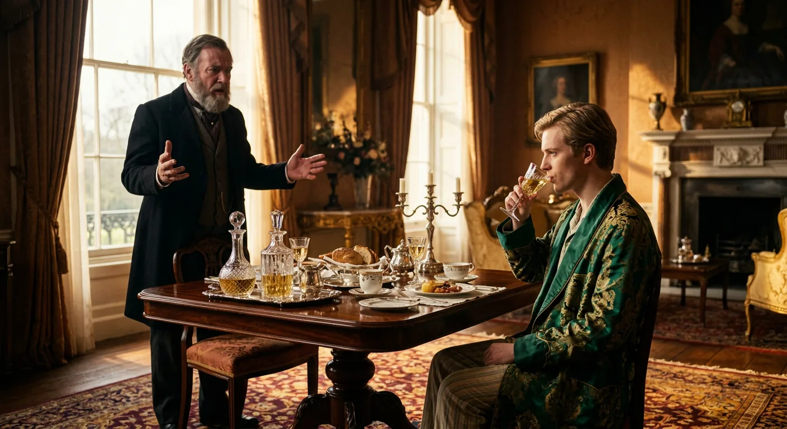
The Art of Unfeeling
The morning after Sibyl Vane's death finds Dorian Gray at breakfast, sipping pale-yellow wine from a delicate Venetian glass, when Basil Hallward arrives in a state of considerable agitation. The painter, having learned of the tragedy through a late edition of *The Globe*, has spent a dreadful evening imagining one horror following upon another, and he comes expecting to find his young friend shattered by grief. What he discovers instead chills him to the marrow: Dorian, looking dreadfully bored, speaks of having attended the opera the very night Sibyl's body lay in some sordid lodging. He dismisses the subject with an airy paradox borrowed from Lord Henry—that expression alone gives reality to things, and therefore silence renders events as though they had never occurred.
When Basil presses him, appalled that Dorian can speak of other women's charms while Sibyl awaits burial, the young man leaps to his feet with a philosophy of emotional mastery that reveals how thoroughly Harry's influence has taken root. He will not be at the mercy of his emotions; he means to use them, enjoy them, and dominate them. Sibyl's death, he insists, is merely one of the great romantic tragedies of the age—her passage back into the sphere of art, complete with the pathetic uselessness of martyrdom. The painter perceives with growing horror that something fundamental has changed in the boy who once sat for him with such natural, unspoiled grace.
Yet even as Dorian wounds Basil with his callousness, he confesses a distinction between his two mentors: Harry is clever and charming, but Basil is better, though too afraid of life. He begs the painter not to leave him, not to quarrel, insisting he is what he is. Moved despite himself, Hallward relents—until the conversation turns to the portrait. When Basil attempts to view his own work, hidden behind a screen, Dorian erupts in barely contained terror, threatening to end their friendship forever should the painter so much as touch the covering. His pallid rage, his trembling hands, his eyes like disks of blue fire—these alarm Hallward utterly.
The crisis deflects into revelation when Dorian, recovering himself, demands to know why Basil once refused to exhibit the portrait. What follows is the painter's strange confession: from their first meeting, Dorian's personality dominated him entirely, becoming the visible incarnation of an artistic ideal. He had painted the youth as Paris, as Adonis, as Antinous gazing across the Nile—but it was the realistic portrait, the one capturing Dorian as he truly was, that seemed to reveal too much of Basil's own idolatry. He had feared others would see his worship exposed in every flake of colour.
Dorian breathes relief; the peril has passed. He feels pity for Basil's romantic devotion but dismisses the confession as merely an admission of excessive admiration—nothing more. Still, he refuses absolutely to sit again, declaring there is something fatal about a portrait, that it possesses a life of its own. After Hallward departs, Dorian smiles to himself at how he has extracted a secret rather than surrendering his own. Yet the smile fades into determination: the portrait must be hidden away at all costs, for he cannot risk such a moment of near-discovery again—and with that resolution, he rings for his servant to secure the canvas from all future intrusion.
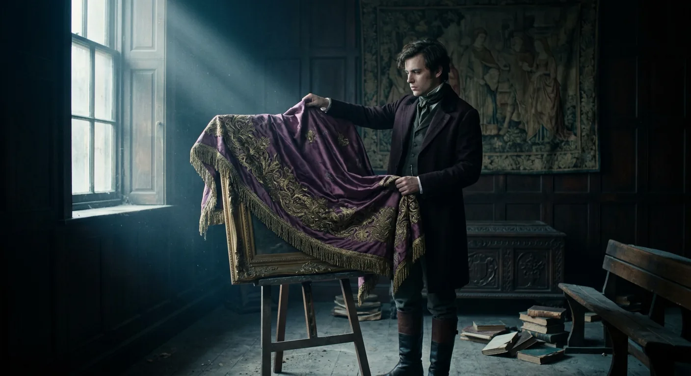
The Schoolroom's Secret Burden
Upon waking, Dorian Gray found himself gripped by a cold, calculating vigilance, his eyes tracking his servant Victor with the wary precision of one who guards a terrible secret. The man's face betrayed nothing—a placid mask of servility reflected in the glass—yet Dorian could not shake the suspicion that those eyes had wandered toward the screen, toward the hidden canvas that now bore witness to his corruption. Such are the wages of sin: not merely guilt, but the endless exhaustion of concealment.
With methodical care, Dorian set his plan in motion. From the aged Mrs. Leaf he procured the key to the old schoolroom—that dust-shrouded chamber at the top of the house, untouched since his grandfather's death. The mention of Lord Kelso sent a wince through him, summoning hateful memories of a stern, distant figure who had built that very room to keep a despised grandson at arm's length. How fitting, then, that this forgotten sanctuary should become the tomb for his soul's corruption.
Before the frame-maker's men arrived, Dorian selected the portrait's shroud: a magnificent purple satin coverlet, heavy with seventeenth-century Venetian gold embroidery, once perhaps a pall for the dead. Now it would conceal something worse than death—a corruption that would breed horrors yet never die. For a fleeting moment, regret pierced him; he thought of Basil, whose love had been noble and intellectual, untainted by mere physical admiration. Basil might have saved him from Lord Henry's influence, from the poisonous impulses of his own temperament. But such thoughts were futile ornaments. The past could be annihilated through denial or forgetfulness, but the future remained inevitable, heavy with passions that would demand their terrible outlet.
When Mr. Hubbard, the florid frame-maker from South Audley Street, arrived with his assistant, Dorian charmed them as he charmed everyone—effortlessly, irresistibly. Together they carried the bulky portrait up the front staircase to the schoolroom, where Dorian unlocked the door to the curious secret of his life. The room stirred memories of lonely childhood: the Italian cassone where he had hidden as a boy, the dog-eared schoolbooks, the faded Flemish tapestry depicting a king and queen at chess. He recalled the stainless purity of those years and shuddered at the profanation of housing his shameful portrait here. Yet no other place offered such security from prying eyes. Beneath its purple pall, the painted face could grow bestial and unclean, and none would ever see it.
Once alone, Dorian locked the door and descended to the library, where tea awaited alongside a note from Lord Henry and a strange yellow-covered book. But something else caught his eye: a newspaper marked in red pencil, drawing attention to an inquest on a young actress named Sibyl Vane—death by misadventure. He tore the paper in disgust, annoyed at Harry's thoughtlessness, troubled by the ugliness of reality intruding upon his carefully constructed aestheticism. What had Dorian Gray to do with her death? He had not killed her—or so he assured himself.
The yellow book, however, proved a different poison altogether. It was a novel without plot, concerning a young Parisian who sought to embody every passion and mode of thought from centuries past, written in a jewelled style full of monstrous metaphors and mystical sensuousness. Dorian read until the copper-green twilight faded and shadows crept across the room, lost in a reverie that felt like beautiful illness. When at last he arrived at the club, hours late, he offered Lord Henry a distinction that pleased them both: the book had not charmed him—it had fascinated him, which was something altogether more dangerous.
And so began an influence that would shape the years to come, as insidious and transformative as the portrait hidden away in that dusty schoolroom above.
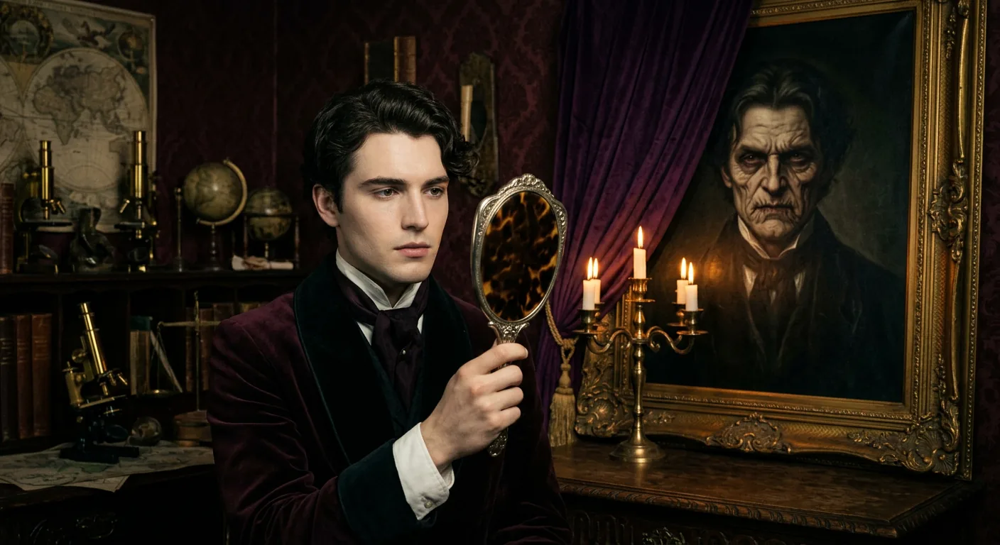
The Mirror and the Monster Within
For years beyond counting, the yellow book from Paris held Dorian Gray in its perfumed grip—though perhaps it would be more accurate to say he never wished to slip free. He acquired nine copies of the first edition, bound each in different colours to suit his kaleidoscopic moods, and found in its pages a prophecy of his own existence, as though his life had been written before he had troubled to live it. The novel's hero, that strange Parisian in whom romance and science mingled like incense and ash, became a prefiguring type of himself—yet in one crucial particular, Dorian proved more fortunate. He never suffered the grotesque dread of mirrors that afflicted his literary counterpart, whose beauty had decayed. No: Dorian's beauty remained immaculate, untouched, eternal.
And so he moved through London like a living paradox. Rumours of unspeakable vice circulated through the clubs, yet men fell silent when he entered, rebuked by the purity of his face. Women who had defied convention for his sake grew pale with horror at his approach. His mysterious absences gave rise to whispered scandals—tales of brawling with foreign sailors in Whitechapel dens, consorting with thieves and coiners—yet his boyish smile and infinite grace seemed sufficient answer to every calumny. Society, after all, values manners above morals, and a good chef above irreproachable character.
In secret, Dorian would steal to the locked room where Basil Hallward's portrait hung behind its purple-and-gold curtain. There, holding a mirror beside the canvas, he would compare the fair young face reflected in polished glass against the hideous thing that aged and corrupted in his stead—the coarsening hands, the heavy sensual mouth, the lines of sin searing the painted forehead. The sharpness of the contrast quickened his pleasure. He grew enamoured of his own beauty and fascinated by the degradation of his soul.
Yet his pursuits were not merely criminal. Lord Henry's early gift of curiosity had blossomed into ravenous hunger, and Dorian elaborated a new philosophy: a Hedonism that would spiritualize the senses rather than starve them. He studied perfumes and their mysterious influences—frankincense for mysticism, ambergris for passion, violets for dead romances. He held concerts of barbaric music in vermilion-and-gold chambers, collecting strange instruments from dead nations and savage tribes. He amassed jewels by the hundreds, losing himself in tales of the diamond that rendered men invisible and the selenite that waxed and waned with the moon. He acquired ecclesiastical vestments—copes of crimson silk, chasubles figured with the Passion of Christ—drawn to the mystic offices for which such gorgeous raiment was made.
These treasures served as modes of forgetfulness, means by which he might escape, for a season, the terrible portrait that recorded the truth of his existence. For weeks he would avoid the locked room entirely, reclaiming his light heart and passionate absorption in mere existence. Then some night the compulsion would seize him; he would creep to dreadful places near the docks, stay for days, and return to sit before the painted thing—sometimes loathing it, sometimes smiling with secret pride at the misshapen shadow bearing the burden that should have been his own.
Thus the years turned like pages in a gilded book, each season bringing new sensations, new collections, new corruptions—while Dorian Gray remained unchanged, his youth preserved in defiance of nature and time, poisoned not by emerald cups or jewelled fans, but by the most dangerous instrument of all: a book that had taught him to see evil simply as another mode through which beauty might be realized.
And yet, even as he assembled his glittering distractions, the portrait waited behind its curtain—patient, hideous, and increasingly difficult to ignore.
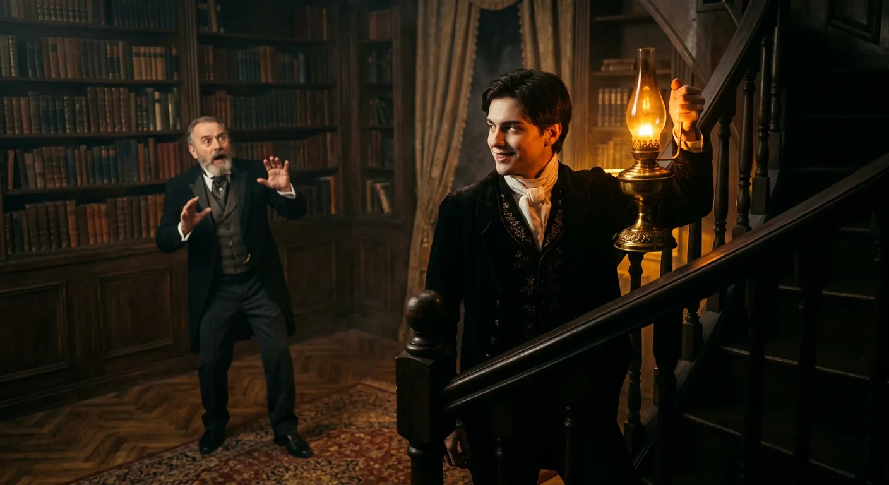
A Foggy Night's Fatal Reckoning
On the eve of his thirty-eighth birthday, Dorian Gray walked home through the November fog from Lord Henry's house, wrapped in heavy furs against the cold. At the corner of Grosvenor Square, a figure passed swiftly through the mist—grey ulster collar turned up, bag in hand—and Dorian recognized him at once: Basil Hallward. A strange, inexplicable fear seized him, and he made no sign of recognition, quickening his pace toward home. But Basil had seen him, and within moments the painter's hand was upon his arm.
Basil had been waiting in Dorian's library for hours, he explained, eager to see his old friend before departing for Paris on the midnight train. He intended to sequester himself in a studio abroad for six months, consumed by some great picture forming in his imagination. Yet it was not art that compelled this urgent encounter—it was Dorian himself. Languidly, with characteristic indifference, Dorian invited him inside, warning him against serious conversation. "Nothing is serious nowadays," he declared. "At least nothing should be."
In the warm library, with its blazing fire and silver spirit-case, the two men settled into what began as pleasant triviality—talk of servants, brandy-and-soda, the fashionable absurdity of *Anglomanie* in Paris. But Basil would not be deflected. With grave purpose, he confessed that dreadful things were being whispered throughout London about Dorian Gray. Scandals clung to his name like shadows: gentlemen fled rooms upon his entrance; former friends spoke of him with undisguised horror; young men whose lives he had touched seemed invariably to meet ruin, disgrace, or death.
Dorian deflected these accusations with sardonic contempt, dismissing English society as a breeding ground for hypocrites who slandered their betters over gross dinner-tables. But Basil pressed on relentlessly, cataloguing the wreckage—the suicided guardsman, the exiled baronet, Adrian Singleton's dreadful end, the young Duke of Perth's destroyed reputation, even Lord Henry's own sister, Lady Gwendolen, now a social pariah. The painter's voice grew heavy with sorrow as he confessed that Lord Gloucester had shown him a dying woman's letter, implicating Dorian in some terrible confession.
"Know you?" Basil murmured. "I wonder do I know you? Before I could answer that, I should have to see your soul."
At these words, Dorian started from the sofa, his face draining to white. A bitter, mocking laugh escaped him, and something wild—prideful, reckless, almost mad—overtook his manner. "You shall see it yourself, tonight!" he cried, seizing a lamp from the table. The portrait, he declared, was Basil's own handiwork; why should its creator not behold what it had become? He felt a terrible joy at the thought of sharing his secret, of burdening the painter forever with the hideous knowledge of what his art had wrought.
Basil recoiled, calling it blasphemy, begging Dorian to deny the rumors utterly—to give him reason to believe in the innocent face that still, impossibly, showed no trace of corruption. But Dorian only smiled with cold contempt and invited him upstairs, promising to show him a diary of his life, kept always in the room where it was written.
Basil agreed to follow, though he sensed already that his midnight train was lost to him—and perhaps something more.
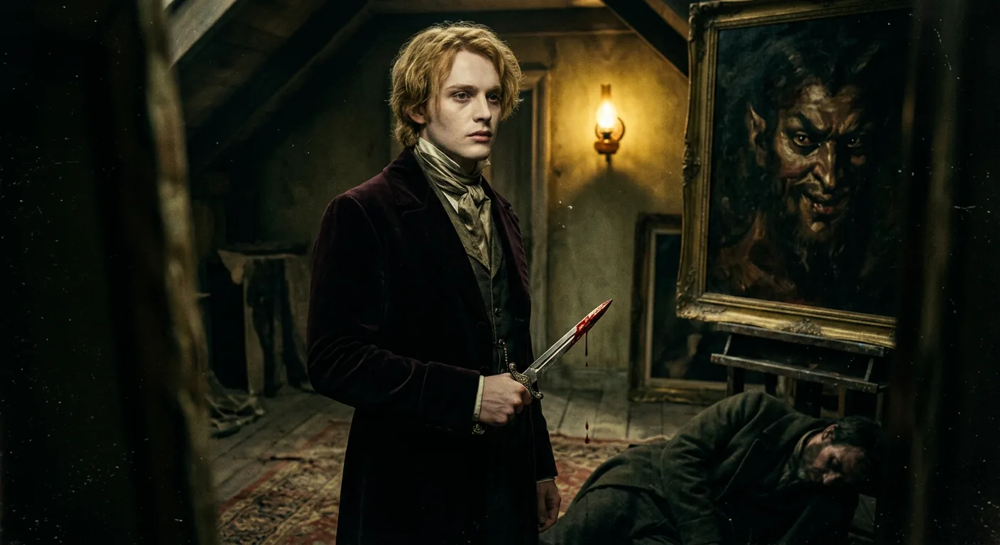
The Soul Revealed in Canvas
They ascended through the lamplit darkness like conspirators, their footsteps instinctively hushed against the night, while wind rattled the windows and shadows writhed fantastically upon the walls. At the topmost landing of that forgotten chamber, Dorian Gray turned the key with a curious satisfaction, informing Basil Hallward that he alone was entitled to know everything—that the painter had shaped his life more profoundly than he could imagine. The room they entered was a mausoleum of neglect: dust shrouded every surface, mildew perfumed the air, and a mouse scuttled behind the wainscoting. Only a faded Flemish tapestry, an old Italian *cassone*, and a curtained picture disturbed the emptiness.
"You think only God sees the soul, Basil?" Dorian murmured with cold cruelty. "Draw back that curtain, and you will see mine."
When Hallward refused, Dorian tore the drapery away himself, and there upon the canvas grinned the hideous testimony of corruption—a face that retained only vestiges of its former loveliness, now bloated with sin, leering with the eyes of a satyr, of a devil. The painter recognized his own brushwork, his own signature in bright vermilion, and felt his blood transform from fire to sluggish ice. Meanwhile, Dorian watched with the detached fascination of a theatre-goer observing some great performance, idly crushing a flower between his fingers.
The revelation became accusation. Hallward recalled the portrait's creation, the fatal wish Dorian had uttered in his youth, and though he grasped for rational explanations—damp, mildew, poisoned paints—the truth confronted him with leprous certainty. The corruption had emerged from within the canvas itself, the rotting evidence of a soul decayed beyond imagining. Overcome, the painter collapsed into a chair, burying his face in his hands, and pleaded with Dorian to pray, to repent, to remember the verses of his childhood: *Though your sins be as scarlet, yet I will make them as white as snow.*
But Dorian stood unmoved. "It is too late, Basil," he whispered, and those words meant nothing to him now.
Then hatred seized him—sudden, uncontrollable, as though whispered by the grinning lips upon the canvas itself. His gaze fell upon a knife left carelessly upon the painted chest, and before thought could intercede, he had moved behind Hallward and plunged the blade into the great vein behind his ear, again and again, until only the horrible dripping upon the threadbare carpet broke the silence.
Afterward, Dorian stepped onto the balcony with strange calm. The fog had lifted to reveal a sky like a monstrous peacock's tail, scattered with golden stars. Below, a policeman made his rounds; a drunken woman stumbled past the railings. He observed it all with the detachment of one watching a distant theatre, then returned inside, locked the door without glancing at the crumpled figure, and descended to conceal Hallward's belongings in a secret press.
The murder had been swift, the evidence manageable. Basil had departed at eleven for Paris—so the servants believed—and with his reserved habits, months would pass before suspicion arose. Everything could be destroyed by then. After establishing an alibi with his drowsy valet, Dorian retired to the library and withdrew a Blue Book from the shelves, turning its pages until he found precisely what he sought: the address of Alan Campbell, the one man who might help him dispose of what remained upstairs.
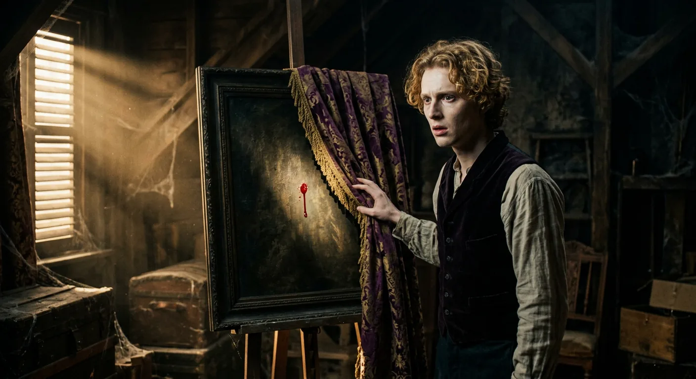
Sunlight on Blood-Stained Memory
The morning after the murder dawns with almost indecent beauty—a November sun streaming warm and bright through the shutters, mellow as May, while Dorian sleeps with the untroubled serenity of a boy exhausted by play. His servant must touch him twice before he wakes, and when he does, a faint smile passes across his lips, though he has dreamed nothing at all. Youth smiles without reason; it is one of its chiefest charms.
Yet gradually the events of the preceding night creep with silent, blood-stained feet into his brain. The memory of what he has done—the corpse still sitting upstairs in the terrible sunlight—fills him with such revulsion that he resolves to drug the thought with poppies, to strangle it before it strangles him. He dresses with more than usual care, lingers elaborately over breakfast, sorts his correspondence with studied indifference. One letter from a woman he tears up with annoyance—"That awful thing, a woman's memory!"—and then writes two notes of his own. One he pockets; the other he dispatches to a Mr. Alan Campbell.
The waiting proves unbearable. Dorian attempts distraction through art, sketching idly, but every face he draws takes on a fantastic likeness to Basil Hallward. He turns to Gautier's exquisite *Émaux et Camées*, losing himself in verses of Venice—the pink and pearl city, its green waterways, the autumn he had spent there with Basil, poor Basil, what a horrible way for a man to die! But the book falls from his hand as terror seizes him. What if Campbell refuses? What if he is out of England?
Campbell, we learn, had once been Dorian's intimate—drawn to him through music and that indefinable attraction Dorian exercised without conscious effort. For eighteen months they were inseparable, until something unspoken occurred, and Campbell withdrew into melancholy and science, his name appearing in journals for curious biological experiments. When at last he arrives, he is stern and pale, his contempt evident.
What follows is a dreadful negotiation. Dorian confesses to murder, demands that Campbell use his chemical expertise to destroy the body entirely—reduce it to ashes. Campbell refuses with righteous fury until Dorian slides a folded paper across the table. Whatever secret it contains proves devastating; Campbell grows ghastly white, his resistance crumbling. Blackmailed into complicity, he agrees to perform the gruesome work, and Dorian sends his servant away on an errand for orchids—no white ones—to ensure privacy.
When they ascend to the locked room, Dorian glimpses the portrait and freezes: upon one painted hand gleams something like red dew, wet and glistening, as though the canvas itself had sweated blood. He drapes the purple-and-gold hanging over the terrible image and flees, leaving Campbell to his hideous task. Hours later, Campbell emerges pale but calm—the thing that had been sitting at the table is gone, dissolved into nothing but a lingering smell of nitric acid. He demands they never meet again, and Dorian, with simple gratitude for his salvation, watches him go.
But salvation, as Dorian is learning, exacts its own corrupting price—and the portrait upstairs bears witness to debts that chemistry cannot dissolve.
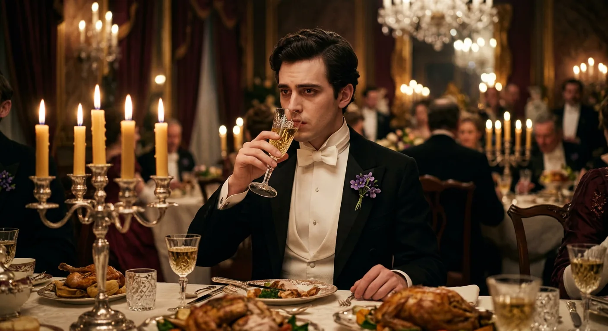
A Mask of Grace and Guilt
That evening, Dorian Gray arrived at Lady Narborough's drawing-room exquisitely dressed, a button-hole of Parma violets adorning his coat, his manner all graceful ease—though beneath that polished surface, his nerves throbbed with a maddened intensity. Perhaps, as he himself reflected, one never appears so perfectly at ease as when one must play a part. Certainly none who observed him that night could have fathomed that those finely shaped fingers had so recently clutched a knife for sin, nor that those smiling lips had cried out against God and goodness. For a moment, he felt the terrible pleasure of his double life with acute keenness.
Lady Narborough—a clever woman possessed of what Lord Henry once described as the remains of really remarkable ugliness—had assembled rather a tedious party in some haste. Having dispatched her husband to a marble mausoleum of her own design and married off her daughters to rich, elderly men, she now devoted herself to the pleasures of French fiction, French cookery, and French *esprit*. The guests themselves proved an uninspiring collection: middle-aged mediocrities, overdressed women of thwarted ambition, and her own dowdy daughter accompanied by a husband whose inordinate joviality could not compensate for his utter lack of ideas.
Dorian found some consolation only when Lord Henry arrived, lending charm to an insincere apology with his slow, musical voice. Yet at dinner, Dorian could not eat; plate after plate went untasted while champagne flowed freely. The conversation sparkled with the usual philosophical sparring—paradoxes about marriage, wickedness, and the mysteries of women who accumulate husbands like Madame de Ferrol, whose hair had turned quite gold from grief at her third husband's passing. When Lady Narborough declared that Dorian was made to be good, that he *looked* so good, the bitter irony cut beneath his composed exterior.
"I wish it were *fin du globe*," Dorian sighed. "Life is a great disappointment."
After the ladies withdrew, Lord Henry's probing questions about the previous night—where Dorian had gone, what he had done—rattled him visibly. His answers grew contradictory and sharp until he excused himself abruptly, declaring he must go home.
And home he went, where terror awaited. In the privacy of his library, he unlocked the secret press containing Basil Hallward's coat and bag, feeding them to a blazing fire. The horrible smell of singeing clothes and burning leather filled the room as three-quarters of an hour consumed the evidence. Afterward, faint and sick, he bathed his hands in musk-scented vinegar.
Then his gaze fell upon a Florentine cabinet of ebony and ivory. Within its secret drawer lay a small Chinese box, elaborately wrought, containing a green paste of heavy, persistent odour. He hesitated, smiled strangely, then put it back—for now. As midnight struck bronze blows upon the dusky air, Dorian crept from his house dressed commonly, a muffler wrapped round his throat, and hailed a hansom bound for some distant address near the river, where darker consolations awaited him still.
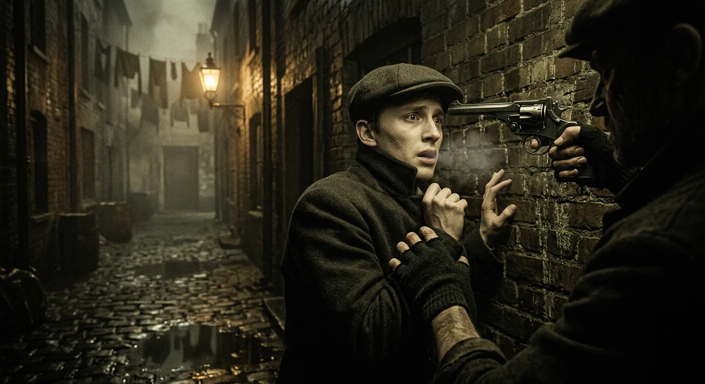
The Desperate Search for Oblivion
Through streets slicked with cold rain, past the ghastly blur of lamp-light and the sordid clustering of broken souls at public-house doors, Dorian Gray reclined in his hansom, repeating Lord Henry's poisoned wisdom like an incantation: "To cure the soul by means of the senses, and the senses by means of the soul." The words rang hollow against the weight of what he carried—innocent blood upon his conscience, the memory of Basil's accusations burning through him. Yet forgiveness was impossible; only forgetfulness remained, and he meant to purchase it in the opium dens where new sins might drown the old.
The journey seemed interminable, the streets narrowing into a black web through which the hansom plodded while Dorian's hunger for oblivion gnawed at him with hideous urgency. They passed lonely brickfields where bottle-shaped kilns breathed orange tongues of fire, then rattled through rough-paved streets where fantastic shadows moved like monstrous marionettes behind lamplit blinds. Ugliness—once so hateful to his refined sensibilities—now became dear to him precisely because it was real. The coarse brawl, the loathsome den, the crude violence of disordered life possessed an intense actuality that the gracious shapes of art could never match. They offered what he craved: forgetfulness.
At last the hansom stopped near the docks, where black masts rose above jagged chimney-stacks and white mist clung to the yards like ghostly sails. Dorian made his way to a shabby house wedged between gaunt factories, entering a squalid chamber that had once been a third-rate dancing-saloon—now a wretched haven for Malays crouching over charcoal stoves, sprawling sailors, and haggard women mocking the desperate. In the darkened chamber above, where the heavy odour of opium hung thick as absolution, he encountered Adrian Singleton, a young man whose ruin whispered of Dorian's own corrupting influence. The meeting troubled him; he could not stay where memory might find him.
Departing through the painted woman's hideous laughter—"There goes the devil's bargain!"—Dorian hurried along the quay, dismissing Adrian's fate as none of his concern. Each man paid his own price for living. But as he darted into a dim archway, brutal hands seized him from behind, thrusting him against the wall with a revolver gleaming at his head. His assailant was James Vane, Sibyl's brother, who had sworn vengeance eighteen years ago and heard the name "Prince Charming" spoken that very night.
Terror paralyzed Dorian—until a wild hope flashed through him. He demanded to be dragged into the lamplight, and there his unchanged youth became his salvation. James Vane beheld the face of a boy scarcely twenty, impossibly young to be the man who had destroyed his sister so many years past. Horrified by his near-crime, James released him with stammered apologies, and Dorian walked away with stern reproach upon his lips.
Yet the shadow that had crept along the dripping wall now emerged—the haggard woman from the den, who hissed the damning truth: it was indeed Prince Charming, unchanged these eighteen years, sold to the devil for a pretty face. James Vane rushed to the corner, but Dorian Gray had vanished into the night, leaving behind only the woman's oath and the terrible knowledge that his quarry still lived—ageless, unreachable, and more dangerous than before.
Now, as James stood trembling in the gaslit dark with this impossible revelation burning through him, the hunt for Dorian Gray had only truly begun.
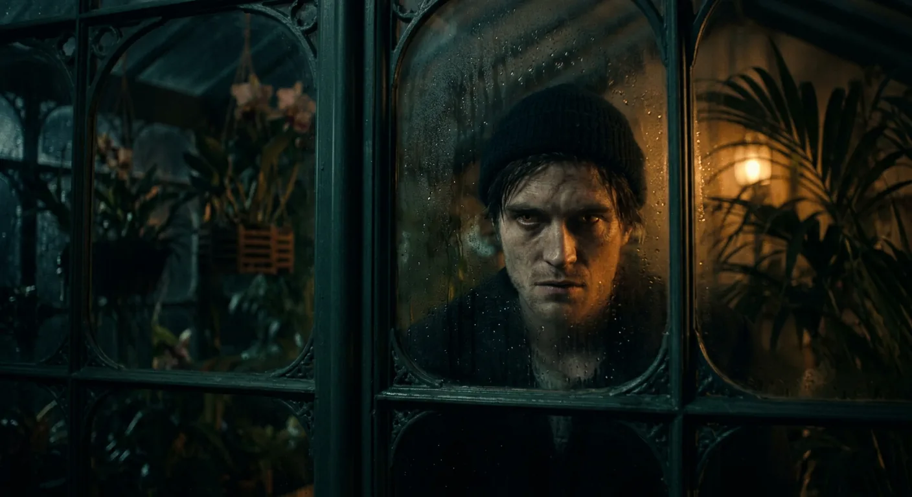
Paradox and Wit at Tea
The gilded machinery of society continued to turn, indifferent to the shadows gathering at its edges, as Dorian Gray presided over a house-party at Selby Royal with all the studied grace of a man for whom pleasure had become profession. In the conservatory, where mellow lamplight played upon delicate china and hammered silver, the pretty Duchess of Monmouth held court over the tea service while her husband—a jaded specimen of sixty—droned elsewhere about Brazilian beetles to the politely suffering Lady Narborough. Lord Henry reclined in silk-draped wicker, observing the scene with his customary air of amused detachment, as young men in elaborate smoking-suits performed their choreographed duties among the guests.
What followed was not conversation but intellectual fencing, that peculiar form of aristocratic combat where wit serves as weapon and paradox as armor. Lord Henry lamented the loss of lovely names, declaring that the man who could call a spade a spade should be compelled to use one—it being the only thing he was fit for. The Duchess, proving herself no mere ornament, dubbed him Prince Paradox, and the title stuck despite his theatrical protests. Their exchange spiraled through art, love, religion, and the English national character with the velocity of a verbal duel, each thrust met by parry, each epigram answered by its mirror.
"Art?" she asked. "It is a malady." "Love?" "An illusion." "Religion?" "The fashionable substitute for belief."
The Duchess was no fool; she recognized in Lord Henry both adversary and kindred spirit, and their banter crackled with the electricity of minds well-matched. When the conversation turned to Dorian—once christened Prince Charming, now something altogether more complicated—he deflected with practiced charm. Asked whether Lord Henry's philosophy had made him happy, Dorian offered a reply that rang hollow beneath its polish: "I have never searched for happiness. Who wants happiness? I have searched for pleasure." And found it? "Often. Too often."
Lord Henry warned his cousin that she flirted disgracefully, that Dorian was fascinating. "If he were not," she replied, "there would be no battle." They spoke of Greeks and Trojans, of courage passing from men to women, of burnt children loving fire—all the while circling the real danger that lurked unseen.
Then the evening shattered.
Dorian had gone to fetch orchids for the Duchess, disappearing among the conservatory's flapping palms, when a stifled groan echoed through the room, followed by the dull, terrible sound of a body striking tile. Lord Henry rushed to find his friend lying face downwards in a deathlike swoon, and when Dorian was carried to the blue drawing-room and revived upon a sofa, his first words were not of health but of safety. "Am I safe here, Harry?" he asked, trembling like a man pursued.
He insisted on coming down to dinner, declaring he could not bear to be alone, and throughout the meal maintained a wild, reckless gaiety that deceived no one who looked closely. For pressed against the conservatory window, pale as a white handkerchief against the glass, Dorian had seen the face of James Vane—Sibyl's brother, returned like a ghost from the docks and the years, watching, waiting, and promising a reckoning that no amount of wit or beauty could deflect.
The hunter had found his quarry, and Selby Royal's elegant walls offered no true sanctuary from the justice that had finally arrived at Dorian Gray's door.
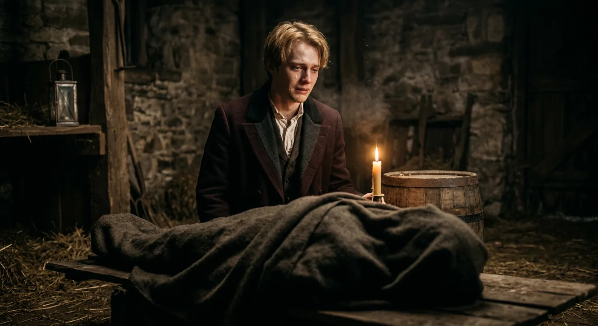
Shadows of Conscience and Fatal Chance
For a full day following his encounter with the spectral face in the night, Dorian Gray remained imprisoned within his own chambers, consumed by a peculiar duality of sensation—a wild, animal terror of death warring against a profound indifference to the very life he so feared losing. Each flutter of tapestry, each whisper of dead leaves against the windowpanes, became a herald of vengeance; the sailor's face seemed perpetually to hover at the mist-stained glass, horror laying its cold hand upon his heart. Yet reason intruded upon these phantoms: actual life, he reminded himself, was chaos without moral architecture—the wicked unpunished, the good unrewarded, success merely the birthright of the strong. Surely it had been imagination alone that summoned such hideous shapes, for Sibyl Vane's brother could not possibly know him, and the mask of youth had been his salvation. Still, the thought that conscience might conjure such spectres—shadows peering from corners, whispers at feasts, icy fingers upon sleeping flesh—drove him to pale terror until Lord Henry found him weeping as one whose heart would break.
By the third day, the pine-scented winter air restored something of his ardour, and Dorian's finely wrought temperament revolted against excessive anguish as naturally as it had succumbed to pleasure. He joined a shooting party, delighting in the crisp frost, the blue metal sky, the aromatic wood—until a hare bolted from the bracken, and something in its grace compelled him to cry out against its death. Sir Geoffrey fired regardless; two cries pierced the air, one dreadful, one worse—a beater had been struck. They dragged a body from the thicket, and Dorian turned away, convinced that misfortune stalked his every footstep.
Lord Henry dismissed the tragedy with characteristic languor—*ennui* being the sole unforgivable sin, omens mere superstition—yet Dorian confessed himself burdened by his own personality, longing to escape, to forget, feeling death's monstrous wings wheeling in the leaden air. Even the Duchess's presence and Lord Henry's glittering repartee could not dispel the horror that seized him when Harry spoke casually of murder; Dorian nearly swooned and retreated to his room, ordering his things packed for the night-express to London.
Then came the gamekeeper with news that transformed terror into terrible hope: the dead man was no beater but a stranger—a sailor, tattooed on both arms, carrying a six-shooter. Dorian galloped through spectral avenues to the Home Farm, where a coarse candle sputtered beside a body draped in sacking. He could not bring himself to lift the handkerchief, but when a servant did, a cry of joy escaped his lips: the corpse was James Vane.
He stood gazing at that still form for several long minutes before riding home, tears streaming down his face—tears not of grief but of deliverance. For he knew, with absolute certainty, that he was safe at last.
Yet safety, for a soul so thoroughly corrupted, could only ever prove the most treacherous of illusions.
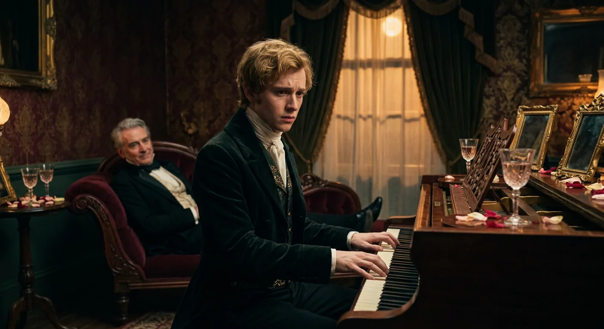
The Final Mask Shatters
It was a curious thing, this sudden passion for virtue that had seized Dorian Gray—curious, and to Lord Henry's mind, entirely suspect. Over rose-water and seeded strawberries, in that languid hour when afternoon dissolves into evening, Dorian proclaimed his reformation with all the earnestness of a convert who has not yet learned that sincerity is merely the most dangerous form of self-deception.
He had spared a girl, he said—a village creature named Hetty, wonderfully like Sibyl Vane in her peasant beauty, whom he had meant to ruin and then, at the final moment, abandoned to her orchard and her innocence. Lord Henry received this confession with the amused condescension one reserves for children who have discovered a new toy. The novelty of renunciation, he suggested, was simply another sensation to be collected, and Hetty would spend her remaining years despising whatever honest ploughman she married, forever haunted by the memory of loving above her station. Perhaps, he added with delicate cruelty, she was already floating in some mill-pond, garlanded with water-lilies like Ophelia.
The conversation turned, as conversations between these two inevitably must, to Basil Hallward. Six weeks had passed since the painter's disappearance, and London society—that organism which requires fresh scandal as the body requires air—still buzzed with speculation. Scotland Yard insisted Basil had departed for Paris; the French police declared he had never arrived. Lord Henry dismissed the matter with characteristic languor, professing distaste for death as the one vulgarity that resisted explanation.
It was then that Dorian, watching his companion with peculiar intensity, asked what Harry would say if told that he had murdered Basil. The response came wrapped in epigram: crime was vulgar, vulgarity was crime, and Dorian was far too exquisite a creature for such coarseness. Murder, Lord Henry pronounced, belonged exclusively to the lower orders, for whom it served as art serves the cultivated—a method of procuring extraordinary sensations. The confession, if confession it was, dissolved into the air like cigarette smoke, neither believed nor investigated.
Yet darker currents stirred beneath the surface wit. When Lord Henry inquired about the portrait Basil had painted—that masterpiece supposedly lost en route to Selby—Dorian's discomfort was palpable. The memory of it, he claimed, was hateful, reminding him of those lines from Hamlet: "Like the painting of a sorrow, a face without a heart." And when Harry, almost carelessly, quoted Scripture about gaining the world while losing one's soul, the music Dorian had been playing jarred discordantly. The soul, Dorian insisted with unexpected vehemence, was terribly real—it could be bought, sold, poisoned, or perfected.
Lord Henry merely smiled at such gravity. He spoke instead of Dorian's miraculous youth, that unchanged beauty which mocked the passage of years, begging to know the secret. Life itself, he declared, had been Dorian's art—his days were sonnets, his existence a kind of music. But Dorian, rising from the piano, murmured that he meant to change, that even Harry would turn from him if he knew everything.
They parted with promises to ride together in the morning, Lord Henry mentioning that the lilacs in the park had never been so lovely since the year they first met. At the door, Dorian hesitated as though some final confession pressed against his lips—then sighed, and went out into the night, leaving behind him only the honey-coloured moon and the lingering notes of Chopin, and carrying with him whatever terrible knowledge now weighed upon a soul he had only recently begun to believe he possessed.
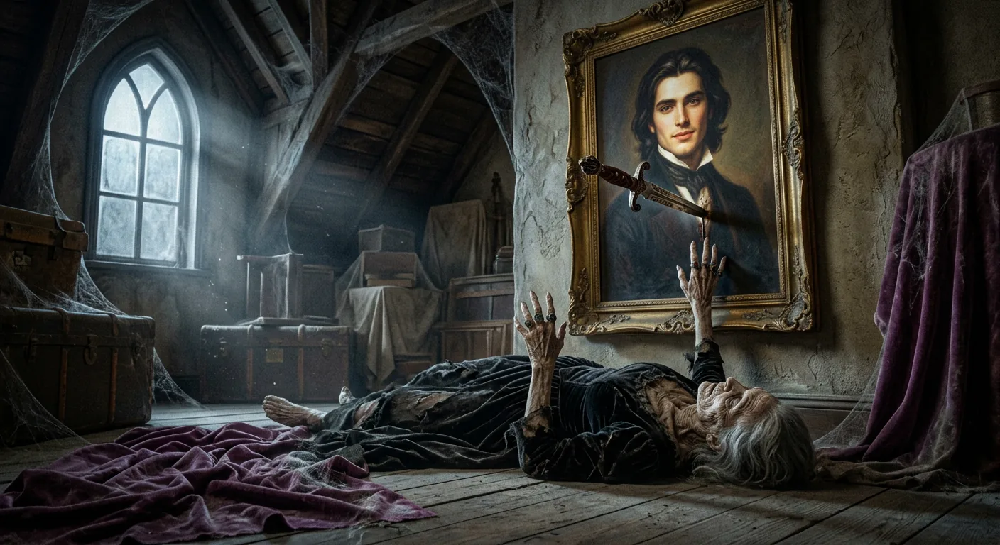
The Soul's Final Reckoning
The night air hung warm and gentle as Dorian Gray made his way homeward, his coat slung carelessly over one arm, a cigarette trailing smoke into the darkness. Two young men in evening dress passed him by, and he caught the whispered recognition of his name—"That is Dorian Gray"—yet where once such notice had thrilled him, now it wearied him utterly. How he had come to prefer the anonymity of the little village, where the girl he had lately been toying with believed him poor, believed him harmless, had laughed at his confession of wickedness as though evil were something belonging only to the old and hideous. Her laugh had been like a thrush singing. She had known nothing of the world, yet possessed everything he had squandered.
Alone in his library, Dorian turned over the words Lord Henry had spoken to him and found himself seized by a desperate longing for the unstained purity of his boyhood—that rose-white boyhood now corrupted beyond recognition. He knew the catalogue of his sins: the minds he had poisoned, the lives he had ruined, the terrible joy he had taken in destruction. And he knew, too, the monstrous bargain struck in that moment of pride and passion when he had prayed for the portrait to bear the weight of his transgressions while he remained forever young. Better, he thought now, if each sin had brought its swift penalty upon his own flesh. There was purification in punishment, after all.
Taking up the ornate mirror Lord Henry had given him years ago, Dorian gazed upon his unchanged beauty and remembered the idolatrous words once written to him: *The world is changed because you are made of ivory and gold.* Revulsion overcame him, and he dashed the mirror to the floor, grinding it to silver splinters beneath his heel. His beauty had been but a mask, his youth but a mockery—the very instruments of his ruin.
Yet even as he contemplated the wreckage of his soul, Dorian's thoughts turned to practical matters of survival. James Vane lay in a nameless grave; Alan Campbell had shot himself and taken Dorian's secret with him; the disappearance of Basil Hallward was already fading from public memory. He was safe. And perhaps, he reasoned, he might yet begin anew. Had he not spared Hetty Merton, that innocent village girl? Surely this one act of mercy would show upon the portrait, would begin to cleanse the corruption from its features.
With trembling hope, he ascended to the locked room and drew back the purple covering. But the face that met him was more loathsome than ever—cunning in the eyes, hypocrisy curved about the mouth, and the scarlet stain upon the painted hands spreading like some horrible disease. His mercy, the portrait revealed, had been nothing but vanity and curiosity dressed in virtue's borrowed clothes. Even his renunciation had been a performance.
A terrible clarity descended upon him. The portrait was evidence—the only evidence remaining. It was conscience itself, and conscience must be silenced. Seizing the same knife that had killed Basil Hallward, Dorian plunged it into the canvas.
The servants woke to an agonized cry and the crash of something falling. When at last they forced their way into the room, they discovered upon the wall a portrait of their master restored to the full splendor of his youth and beauty—and upon the floor, a withered, wrinkled corpse so loathsome they could identify him only by the rings upon his fingers.
Thus ended Dorian Gray, as the bargain struck in vanity was at last collected in full.
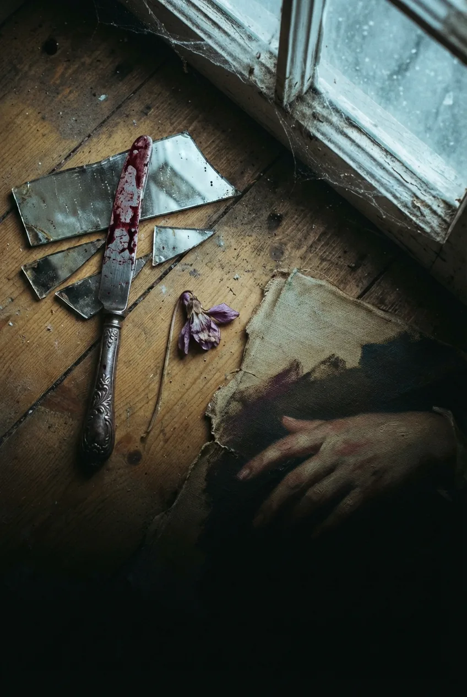